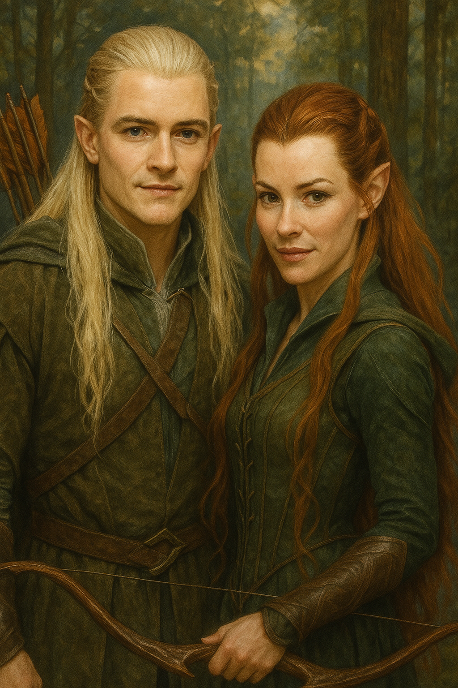
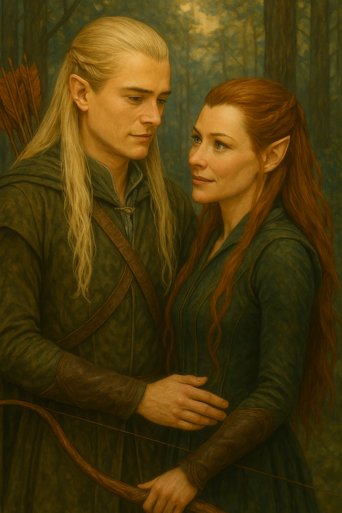
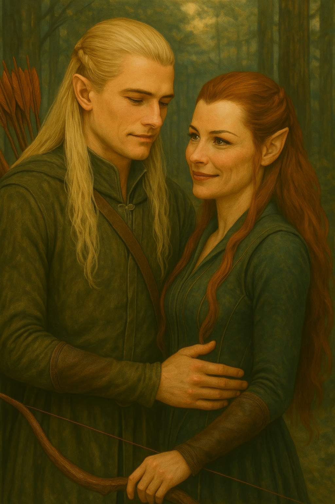

🌲 Guerreiros da Floresta
Legolas, príncipe do reino da floresta, e Tauriel, capitã da guarda. Unidos pela luta contra o mal e pela vontade de ultrapassar os limites impostos pela hierarquia élfica.
💫 Amor não reconhecido
Embora sua ligação fosse profunda, os caminhos da tradição mantiveram seu amor nas sombras. Mas nem o silêncio da floresta pode calar sentimentos verdadeiros.
💬 Fragmentos do Coração
“A floresta canta diferente quando estás ao meu lado.” — Legolas
“Minhas flechas voam por justiça, mas meu coração por ti.” — Tauriel
🌌 Ecos de Emoção



🌄 O Caminho Seguinte
Após os eventos da Guerra dos Cinco Exércitos, Tauriel partiu em exílio. Legolas buscou novas trilhas — e nunca deixou de ouvir o canto suave da floresta... que um dia foi a voz de Tauriel.